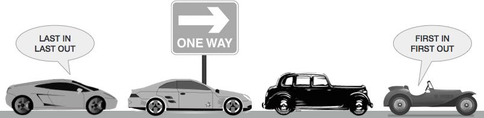

Queue is an abstract data structure, somewhat similar to Stacks. In contrast to Stacks, queue is opened at both end. One end is always used to insert data (enqueue) and the other is used to remove data (dequeue). Queue follows First-In-First-Out methodology, i.e., the data item stored first will be accessed first.
A real world example of queue can be a single-lane one-way road, where the vehicle enters first, exits first. More real-world example can be seen as queues at ticket windows & bus-stops.
As we now understand that in queue, we access both ends for different reasons, a diagram given below tries to explain queue representation as data structure −

Same as Queue, queue can also be implemented using Array, Linked-list, Pointer and Structures. For the sake of simplicity we shall implement queue using one-dimensional array.
Queue operations may involve initializing or defining the queue, utilizing it and then completing erasing it from memory. Here we shall try to understand basic operations associated with queues −
enqueue() − add (store) an item to the queue.
dequeue() − remove (access) an item from the queue.
Few more functions are required to make above mentioned queue operation efficient. These are −
peek() − get the element at front of the queue without removing it.
isfull() − checks if queue is full.
isempty() − checks if queue is empty.
In queue, we always dequeue (or access) data, pointed by front pointer and while enqueing (or storing) data in queue we take help of rear pointer.
Let's first learn about supportive functions of a queue −
Like Queues, this function helps to see the data at the front of the queue. Algorithm of peek() function −
begin procedure peek return queue[front] end procedure
Implementation of peek() function in C programming language −
int peek() {
return queue[front];
}
As we are using single dimension array to implement queue, we just check for the rear pointer to reach at MAXSIZE to determine that queue is full. In case we maintain queue in a circular linked-list, the algorithm will differ. Algorithm of isfull() function −
begin procedure isfull
if rear equals to MAXSIZE
return true
else
return false
endif
end procedure
Implementation of isfull() function in C programming language −
bool isfull() {
if(rear == MAXSIZE - 1)
return true;
else
return false;
}
Algorithm of isempty() function −
begin procedure isempty
if front is less than MIN OR front is greater than rear
return true
else
return false
endif
end procedure
If value of front is less than MIN or 0, it tells that queue is not yet initialized, hence empty.
Here's the C programming code −
bool isempty() {
if(front < 0 || front > rear)
return true;
else
return false;
}
As queue maintains two data pointers, front and rear, its operations are comparatively more difficult to implement than Queue.
The following steps should be taken to enqueue (insert) data into a queue −
Step 1 − Check if queue is full.
Step 2 − If queue is full, produce overflow error and exit.
Step 3 − If queue is not full, increment rear pointer to point next empty space.
Step 4 − Add data element to the queue location, where rear is pointing.
Step 5 − return success.
Sometimes, we also check that if queue is initialized or not to handle any unforeseen situations.
procedure enqueue(data)
if queue is full
return overflow
endif
rear ← rear + 1
queue[rear] ← data
return true
end procedure
Implementation of enqueue() in C programming language −
int enqueue(int data)
if(isfull())
return 0;
rear = rear + 1;
queue[rear] = data;
return 1;
end procedure
Accessing data from queue is a process of two tasks − access the data where front is pointing and remove the data after access. The following steps are taken to perform dequeue operation −
Step 1 − Check if queue is empty.
Step 2 − If queue is empty, produce underflow error and exit.
Step 3 − If queue is not empty, access data where front is pointing.
Step 3 − Increment front pointer to point next available data element.
Step 5 − return success.

procedure dequeue
if queue is empty
return underflow
end if
data = queue[front]
front ← front + 1
return true
end procedure
Implementation of dequeue() in C programming language −
int dequeue() {
if(isempty())
return 0;
int data = queue[front];
front = front + 1;
return data;
}
For a complete Queue program in C programming language, please click here.